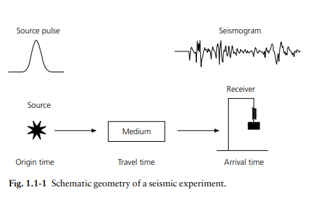
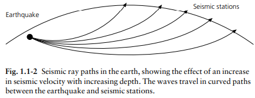
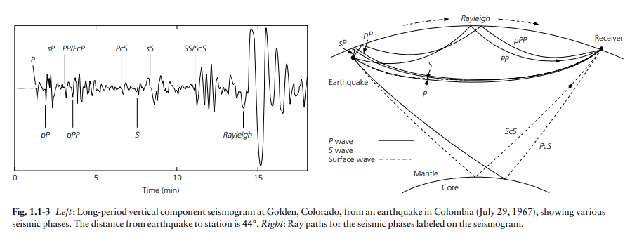
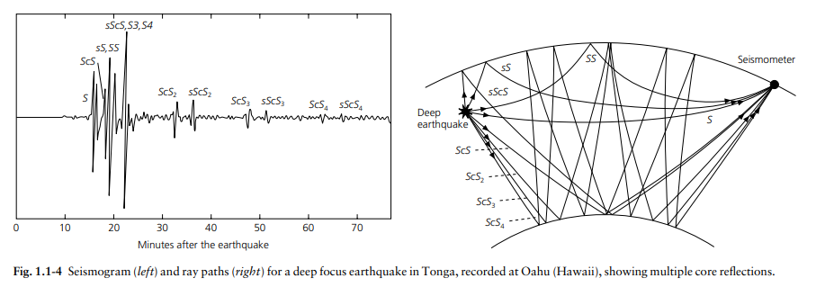
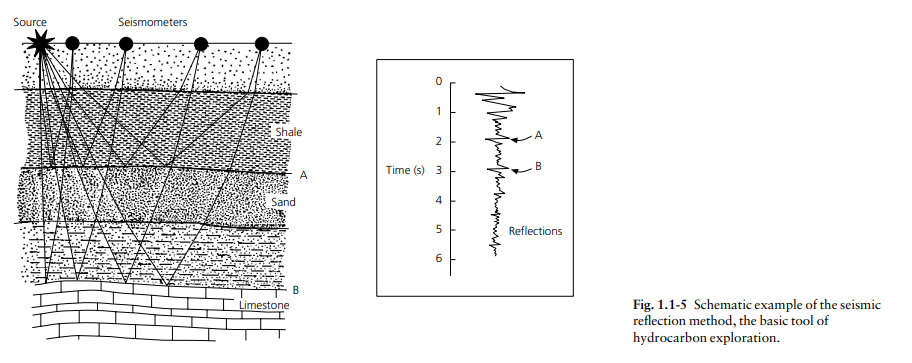
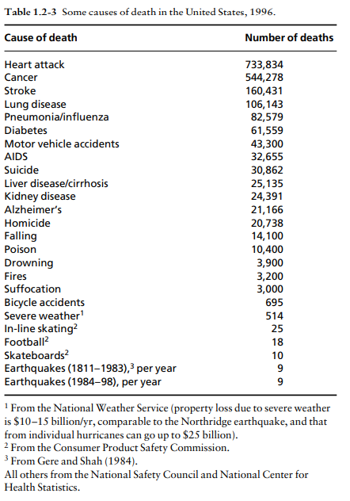
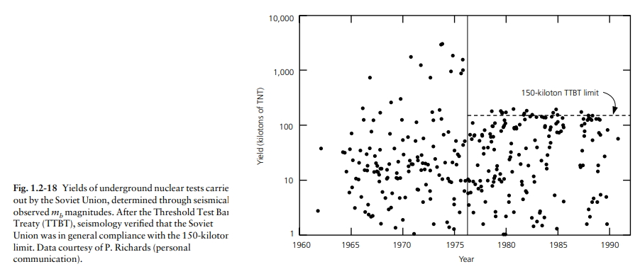
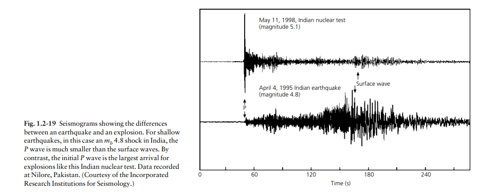
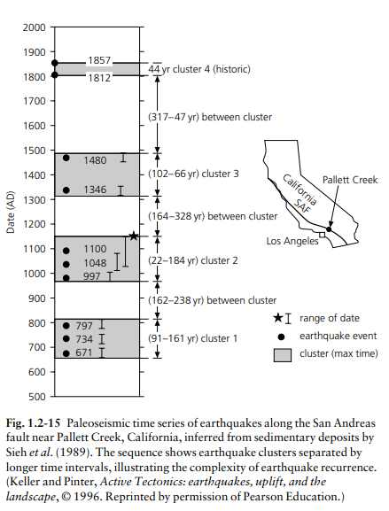
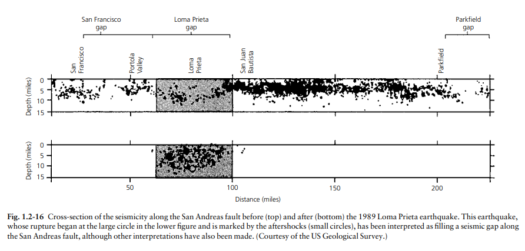

1. 地震學導論 (Introduction)
定義：地震學是研究固體地球中彈性波（或聲波）的學科。
研究核心：地震波由 源 (Source) （如地震或爆炸）產生，通過 介質 (Medium) （地球的一部分）傳播，並由 接收器 (Receiver) （地震儀）記錄。
- 地震圖 (Seismogram)：記錄地面運動的資料，包含有關震源和傳播介質的信息。
- 震源信息：波的到達時間可推算震源位置。
- 介質信息：波的速度反映了地球內部物質的物理性質。
- 地球內部結構探索：由於人類目前鑽探深度僅約 13 公里，地震學成為了解深達 6371 公里地心結構的主要工具。透過地震波速度的變化，科學家推論出地殼、地幔、液態外核及固態內核的存在。
1 主題：地震學研究範疇？
承接上述定義，地震學的研究範疇極廣，主要包含：
- 震源力學： 研究斷層錯動、應力釋放機制，以及非自然震源（核試爆）。
- 構造地震學： 利用地震波作為「地球X光」，探勘地球深部構造與板塊邊界。
- 工程與強震地震學： 評估地表搖晃程度，應用於防震建築設計與災害評估。
2 主題：圖解說明 (1.1-1 ~ 1.1-5)

圖 1.1-1：系統三要素
完美呼應前文的核心概念：震源產生能量，經過地球介質傳遞，最後由地表的接收器（地震儀）記錄。

圖 1.1-2：地震波型與地震圖
展示了波的到達順序：速度最快的 P波最先抵達，接著是 S波，最後是振幅最大、造成破壞的主力——表面波。

圖 1.1-3：透視地球內部
顯示地震射線在地球內部的折射與反射。S波陰影區的存在，正是我們推論出「液態外核」的關鍵證據。

圖 1.1-4：走時曲線 (Travel Time)
波傳播時間與距離的關係圖。利用 P波與 S波抵達的時間差 (S-P time)，我們可以精確計算出震央距離。

圖 1.1-5：全球地震分佈
地震並非隨機發生，而是呈現帶狀分佈。這張圖勾勒出了地球板塊的邊界，是支持板塊構造學說的鐵證。
4 主題：公式(1) 說明，地震波能量衰減的原因？
地震波在傳遞時，其振幅 A(r) 會隨著距離 r 增加而變小，一般可表示為：
能量衰減主要由兩種完全不同的物理機制造成：
- 幾何擴散 (Geometrical Spreading) —— 對應 1/r： 波前向外擴展時，總能量被分攤到越來越大的球殼面積上，導致單位面積上的能量隨距離純粹因幾何空間變大而減少。
- 非彈性衰減/吸收 (Intrinsic Attenuation) —— 對應 e-γr： 地球不是完美的彈性體，岩石顆粒摩擦會將波的機械能轉換為熱能消散；加上地下構造不均勻造成的散射 (Scattering)，導致能量流失。
2. 地震學與社會 (Seismology and Society)
地震學不僅是學術研究，還與社會政策與安全息息相關：
- 板塊構造論的革命： 1960 年代後期板塊構造論的出現是地震學的一個重大範式轉移 (Paradigm shift)，解釋了地震與中洋脊、海溝、火山及山脈的關聯。
- 地震危害與風險分析挑戰： 地震發生頻率低但破壞力強，社會往往較難接受這類風險。
- 預防措施： 海岸場址規劃（識別易受海嘯侵襲區域）與即時預警系統（透過數位數據即時評估並發布警告）。
3 主題：Seismic Hazard 與 Seismic Risk 的區別？
- Seismic Hazard (地震危害)： 指大自然發生的物理現象本身（如斷層破裂、強烈搖晃的「機率」與「強度」）。這是天然的，無法阻止。
- Seismic Risk (地震風險)： 指危害發生後對人類社會造成的後果與損失（傷亡、經濟損失）。
風險 (Risk) = 危害 (Hazard) × 暴露度 (Exposure) × 脆弱度 (Vulnerability)
5 主題：圖 1.2-3、1.2-5、1.2-6 說明

圖 1.2-3：地震的直接破壞
展示強烈地表加速度超越建築承受極限造成的結構性破壞或斷層地表破裂現象。

圖 1.2-5：建築反應譜與共振
當地表搖晃的頻率與建築物的「自然頻率」吻合時，會產生共振 (Resonance)，使搖晃幅度劇增。

圖 1.2-6：海嘯與次生災害
說明海底斷層垂直錯動如何推動海水形成海嘯，以及其他由搖晃引發的間接危害。
6 建築與地震
1. 建材抵抗力：
木材/鋼材具高韌性 (Ductility)，能彎曲吸收能量；未加固磚石屬脆性 (Brittle)，受搖晃易瞬間龜裂倒塌。
2. 建築物高度：
低矮建築自然頻率高，易受高頻（短週期）近震破壞；高樓大廈自然頻率低，易受遠處傳來的低頻（長週期）表面波引發嚴重共振。
7 土壤液化的原因
發生在：鬆散砂土、地下水飽和、強烈搖晃的地區。
機制：強震擠壓飽和的砂土，導致孔隙水壓瞬間急劇上升。當水壓大於砂粒間的摩擦力時，土壤瞬間變成像泥漿一樣的黏滯液體，失去承載力，導致建築下陷或傾斜。
11 主題：如何監測核子試爆？ (圖 1.2-18、1.2-19)
區別自然地震與核武試爆的關鍵在於「震源力學機制」。核爆是均勻膨脹（產生巨大P波，幾乎無S波/表面波）；自然地震是斷層錯動（產生強大S波與表面波）。

圖 1.2-18：波形差異
核爆波形起初是巨大 P波突波，隨後迅速衰減；地震波形則在後段出現振幅極大的 S波與表面波尾巴。

圖 1.2-19：規模鑑別法
比較體波規模(mb)與表面波規模(Ms)。核爆因為缺乏表面波，在圖表上會異常偏向左上方（mb大但Ms極小）。
3. 數據驅動的機率性危害地圖與預測
當代規範的制定高度依賴 地震危害圖 (Seismic Hazard Maps)。這些地圖透過歷史地震數據與物理模型，預測特定地區在未來（如 50 年內）發生特定強度震動（以重力加速度 $g$ 表示）的機率。
公共當局根據這些科學預測來制定不同層級的建築抗震標準，以在建築成本與公共安全之間取得平衡。

8 主題：圖 1.2-14 說明預報與預測之不同
- 預測 (Prediction)： 給出精確的「時間、地點、規模」（目前科學無法做到短期準確預測）。
- 預報 (Forecasting)： 類似天氣預報，給出長期的機率性評估（如圖 1.2-14 顯示未來30年發生大地震的機率為62%）。這是制定法規與保險的依據。
10 主題：地震預測的方法有哪些？
* 註：以上方法目前皆有極高假警報率，無法作為標準預測。
4. 地震空區理論的科學辯論與限制
「地震空區」（Seismic Gaps）理論在地震學界仍是一個具爭議性且尚未被完全證實的預測工具。雖然該理論在直覺上合理，但在實際應用與科學檢驗中遇到了顯著的挑戰。
理論基礎：板塊邊界的填補機制
地震空區理論的核心假設是：一條長型的板塊邊界（如聖安德烈斯斷層或海溝）會分段破裂。由於板塊運動是穩定的，最終所有區段都必須破裂以釋放累積的應力。
9 主題：甚麼是 Seismic Gap？ (圖 1.2-15、1.2-16)
如果活躍斷層帶上相鄰區段皆已發生過大地震，唯獨「某一區段」異常安靜未破裂，這塊空白區域即為「地震空區」。理論認為這裡正高度累積應力，未來極度危險。

圖 1.2-15：歷史破裂分佈
展示歷次大地震破裂的範圍，明顯可見被夾在中間未破裂的空白區段。

圖 1.2-16：空區的填補
顯示後續的地震確實發生在先前的空區內，印證了板塊邊界最終會「填滿破裂」的假設。
5. 互動式隨堂測驗與動畫
讓我們透過三個互動小測驗，搭配視覺化動畫，來驗證你對第一章核心概念的理解！
Q1 地震波與核爆監測
當一個國家秘密進行地下核子試爆時，遠方的地震儀紀錄到的波形最可能呈現什麼特徵？
✅ 正確答案：(B)
【詳解】： 核爆是點源的向外均勻壓縮膨脹，不會產生斷層錯動的剪切力，因此會產生極大的 P波（壓縮波），而幾乎沒有 S波（剪力波）。
💡【舉例】： 就像在水中引爆一顆水仗氣球，水波只會向四周推擠（壓縮），而不會像用手左右攪動水產生波浪（剪切）。
Q2 建築共振效應
遠方發生規模 7.5 大地震，高頻波已衰減，傳遞到城市時只剩下「低頻（長週期）表面波」。請問哪種建築最容易發生嚴重的「共振效應」？
✅ 正確答案：(C)
【詳解】： 建築物越高，其自然頻率越低（週期越長）。遠地傳來的低頻地震波，其頻率容易與高樓的自然頻率一致，波的能量會不斷疊加，產生極大搖晃的共振效應。
💡【舉例】： 就像推鞦韆，繩子越長（高樓）擺動越慢（低頻）。如果你推的頻率剛好對上它慢速擺動的節奏，鞦韆就會越盪越高！
Q3 土壤液化機制
關於「土壤液化」的發生，下列哪一個條件是不需要（或錯誤）的？
✅ 正確答案：(D)
【詳解】： 土壤液化的三要素是：鬆散砂土、水分飽和、強震搖晃。強震會擠壓孔隙中的水，導致「孔隙水壓」急劇上升，把砂粒撐開，使土壤瞬間變成無承載力的泥漿。天然氣體與液化無關。
💡【舉例】： 就像去海邊，踩在乾沙子上很穩；但如果你踩在剛退潮、飽含水分的濕沙子上，腳稍微用力原地踏步（搖晃），沙子就會瞬間變成爛泥巴，讓你的腳陷下去！